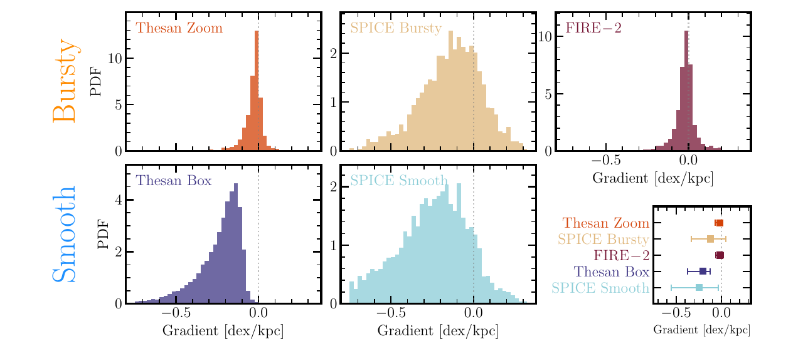

Bursty gradients are typically 2–10 times flatter
FIRE-2, SPICE Bursty, and THESAN Zoom lie much closer to zero than SPICE Smooth and THESAN Box, despite substantial differences within each broad class.
Collaborator study · Multi-simulation comparison
Garcia et al. bring FIRE-2, SPICE, and THESAN into a common high-redshift analysis. Across different codes, bursty feedback repeatedly produces flatter metallicity gradients than smooth feedback.

The first Garcia study found a shared problem among smooth-feedback, large-volume simulations. The follow-up asks whether burstiness is the variable that reorganises metals.
The authors analyse high-redshift galaxies in FIRE-2, SPICE Bursty and Smooth, THESAN Zoom, and THESAN Box. These simulations differ in code, resolution, hydrodynamics, and sub-grid implementation, so a result repeated across families is less likely to be a numerical accident.
Gradients are measured with a common pipeline and then separated by stellar mass and redshift. The focus is not simply which named simulation matches best, but whether the temporal character of feedback predicts the distribution.
FIRE-2, SPICE Bursty, and THESAN Zoom lie much closer to zero than SPICE Smooth and THESAN Box, despite substantial differences within each broad class.
Above roughly 109 M⊙, smoother models build especially negative gradients while bursty feedback continues to mix or redistribute enriched gas.
The observed gradients are generally flatter than the smooth-model predictions and overlap more readily with the bursty simulations, while measurement uncertainties and selection remain substantial.
Neither class comfortably explains every observed system, particularly galaxies with pronounced positive gradients. Feedback cadence improves the comparison without completing the physical picture.
Within SPICE, Bursty and Smooth share initial conditions and most of their physics. Their gradient difference is closely associated with the temporal delivery of supernova energy.
FIRE-2 and THESAN broaden the comparison: flatter gradients also occur in independently implemented bursty models. Across the suites, rapid clustered energy injection redistributes metals more efficiently than temporally smoothed feedback.
Interpretation boundary: “bursty” groups several coupled effects, including outflow strength, gas cycling, star-formation variability, and numerical mixing. The paper identifies a robust association, not one uniquely isolated transport mechanism.